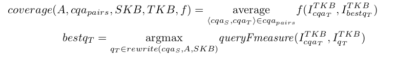
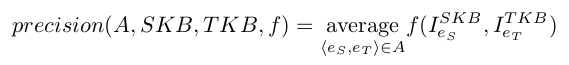
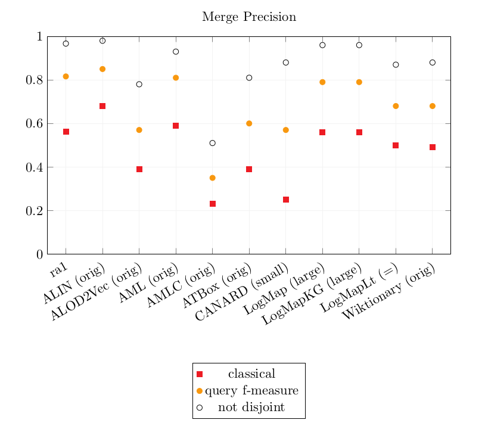
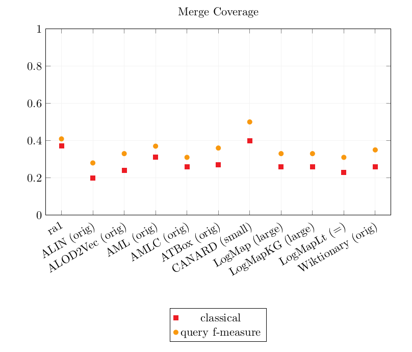

We also evaluated all systems with a SEALS API versions: ALIN, ALOD2Vec, AML, AMLC, ATBox, CANARD, DESKMatcher, Lily, LogMap, LogMapKG, LogMapLt, Wiktionary.
The systems were run on the Original Conference dataset and on two versions of the Populated version of the Conference dataset. Their output alignments were evaluated as described below.
A timeout was set to 40 minutes for each pair of ontologies.
The output alignments as well as the detailed results of the systems are downloadable here.
The system were evaluated on 3 datasets (available here):
In this subtrack, the alignments are automatically evaluated over a populated version of the Conference dataset. The dataset as well as the evaluation systems are available at https://framagit.org/IRIT_UT2J/conference-dataset-population. Two metrics are computed: a Coverage score and a Precision score.
The Coverage and Precision are based on a set of scoring functions between two instance sets Iref and Ieval
For the Coverage score calculation, the reference is a set of pairs of equivalent SPARQL queries (Competency Questions for Alignment (CQAs)), one over the source ontology, one over the target ontology. The source reference CQA is rewritten using the evaluated alignment and its instances are compared to those of the target reference CQA.
Different Coverage scores are output depending on the comparison between the instance sets presented above. As in the following equation where SKB is the source knowledge base, TKB the target knowledge base, cqa_pairs the set of pairs of correspondences, f a scoring function in {classical, query Fmeasure} and A the evaluated alignment.

The Precision score is calculated by comparing the instances represented by the source member with the instances represented by the target member of each correspondence. The following equation shows how the Precision is calculated. SKB is the source knowledge base, TKB the target knowledge base, f a scoring function in {classical, query Fmeasure, not disjoint} and A the evaluated alignment.

As a set of instances from the source knowledge base are compared to a set of instances from the target knowledge base, this score is not absolute, even though the knowledge bases are populated with similar instances (because the ontologies' scopes are not always exactly equivalent). The percentage of correct correspondences is somewhere between the Precision with a classical scoring function and the not disjoint scoring function.
The systems have been executed on a Ubuntu 16.04 machine configured with 16GB of RAM running under a i7-4790K CPU 4.00GHz x 8 processors. All measurements are based on a single run.
CANARD is an oriented system ; its runtime is on the 20 oriented pairs of ontologies. The other system's runtime is that of 10 pairs.
Execution results on the three datasets. (X means an error occured in the run).
| tool | original | small | large | |||
|---|---|---|---|---|---|---|
| nb corr. | time(s) | nb corr. | time(s) | nb corr. | time(s) | |
| ALIN | 166 | 129 | 118 | 134 | X | X |
| ALOD2Vec | 346 | 116 | X | X | X | X |
| AML | 274 | 56 | 1385016 | 1596 | X | X |
| AMLC | 917 | 41 | 915 | 52 | 860 | 2263 |
| ATBox | 342 | 57 | 32314 | 92 | 241068 | 300 |
| CANARD | X | X | 1302 | 5310 | 780 | 43541 |
| DESKMatcher | X | X | X | X | X | X |
| Lily | X | X | X | X | X | X |
| LogMap | 248 | 40 | 7288 | 61 | 92650 | 2699 |
| LogMapKG | 248 | 42 | 7288 | 61 | 92650 | 2669 |
| LogMapLt | 244 | 32 | 36962 | 43 | 801992 | 182 |
| Wiktionary | 276 | 2645 | X | X | X | X |
Detail of the output correspondences on the datasets. Empty cells are 0 (they were removed for visibility)
| orig | small | large | ||||||||||||||||
|---|---|---|---|---|---|---|---|---|---|---|---|---|---|---|---|---|---|---|
| (1:1) | (1:n) | (m:1) | (m:n) | identical | instance | (1:1) | (1:n) | (m:1) | (m:n) | identical | instance | (1:1) | (1:n) | (m:1) | (m:n) | identical | instance | |
| ALIN | 166 | 118 | ||||||||||||||||
| ALOD2Vec | 346 | |||||||||||||||||
| AML | 274 | 242 | 1,384,774 | |||||||||||||||
| AMLC | 290 | 316 | 311 | 288 | 316 | 311 | 282 | 294 | 284 | |||||||||
| ATBox | 342 | 342 | 31,972 | 316 | 240,752 | |||||||||||||
| CANARD | 377 | 871 | 7 | 47 | 208 | 249 | 249 | 74 | ||||||||||
| LogMap | 248 | 252 | 7,036 | 248 | 92402 | |||||||||||||
| LogMapKG | 248 | 252 | 7,036 | 248 | 92,402 | |||||||||||||
| LogMapLt | 244 | 244 | 36,718 | 244 | 144,798 | 656,950 | ||||||||||||
| Wiktionary | 276 | |||||||||||||||||
Results over the 3 datasets
| Original | Small | Large | |||||||||||||
|---|---|---|---|---|---|---|---|---|---|---|---|---|---|---|---|
| Precision | Coverage | Precision | Coverage | Precision | Coverage | ||||||||||
| tool | equiv | query Fmeasure | not disjoint | equiv | query Fmeasure | equiv | query Fmeasure | not disjoint | equiv | query Fmeasure | equiv | query Fmeasure | not disjoint | equiv | query Fmeasure |
| ra1 | 0.56 | 0.82 | 0.97 | 0.37 | 0.41 | 0.56 | 0.82 | 0.97 | 0.37 | 0.41 | 0.56 | 0.82 | 0.97 | 0.37 | 0.41 |
| ALIN | 0.68 | 0.85 | 0.98 | 0.20 | 0.28 | ||||||||||
| ALOD2Vec | 0.39 | 0.57 | 0.78 | 0.24 | 0.33 | ||||||||||
| AML | 0.59 | 0.81 | 0.93 | 0.31 | 0.37 | 0.37 | 0.58 | 0.77 | 0.21 | 0.25 | |||||
| AMLC | 0.23 | 0.35 | 0.51 | 0.26 | 0.31 | 0.23 | 0.35 | 0.51 | 0.26 | 0.31 | 0.25 | 0.36 | 0.51 | 0.26 | 0.30 |
| ATBox | 0.39 | 0.60 | 0.81 | 0.27 | 0.36 | 0.39 | 0.60 | 0.81 | 0.27 | 0.37 | 0.41 | 0.61 | 0.81 | 0.26 | 0.35 |
| CANARD | 0.25 | 0.57 | 0.88 | 0.40 | 0.50 | 0.28 | 0.61 | 0.99 | 0.17 | 0.22 | |||||
| LogMap | 0.56 | 0.79 | 0.96 | 0.25 | 0.32 | 0.56 | 0.78 | 0.95 | 0.25 | 0.32 | 0.56 | 0.79 | 0.96 | 0.26 | 0.33 |
| LogMapKG | 0.56 | 0.79 | 0.96 | 0.25 | 0.32 | 0.56 | 0.78 | 0.95 | 0.25 | 0.32 | 0.56 | 0.79 | 0.96 | 0.26 | 0.33 |
| LogMapLt | 0.50 | 0.68 | 0.87 | 0.23 | 0.31 | 0.50 | 0.68 | 0.87 | 0.23 | 0.31 | 0.50 | 0.68 | 0.87 | 0.23 | 0.31 |
| Wiktionary | 0.49 | 0.68 | 0.88 | 0.26 | 0.35 | ||||||||||
Graphics of the best precision and coverage for each tool


The bigger the dataset, the longer the system runtime. Most systems could not handle the large dataset or met the timeout set to 40 minutes per pair.
Only AMLC and CANARD were able to output complex correspondences.
On the large dataset, CANARD timed out on several pair, lowering its CQA Coverage results.
AMLC was efficient on all 3 datasets.
As last year, the complex matchers obtain the best CQA coverage scores overall. However, AMLC now outputs its own simple alignments instead of relying on an input one. As a consequence, AMLC CQA Coverage score is lower than last year (last year: 0.46-0.50, this year: 0.26-31).
The precision of CANARD is slightly better than last year's (last year: 0.21 - 0.52 - 0.88, this year: 0.25 - 0.57 - 0.88).
The results of the following tools are exactly identical to last year's: ALIN, AML, LogMap, LogMapKG, LogMapLt, Wiktionary.
The CQA Coverage scores are overall still low, so there is room for improvement on this track :)